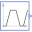

WaterPumpWater pumping station |
|
Diagram
{kind=link}
Information
This information is part of the Modelica Standard Library maintained by the Modelica Association.
There are two reservoirs at ambient pressure, the second one 25 m higher than the first one. The ideal pump is driven by a speed source, starting from zero and going up to 1.2 times nominal speed. To avoid water flowing back, the one way valve is used.
Outputs (5)
| V_flow |
Default Value: volumeFlowSensor.y Type: VolumeFlowRate (m³/s) Description: Volume flow rate |
|---|---|
| p |
Default Value: pressureSensor.y Type: Pressure (Pa) Description: Pressure at pump outlet |
| w |
Default Value: multiSensor.w Type: AngularVelocity (rad/s) Description: Pump speed |
| tau |
Default Value: multiSensor.tau Type: Torque (N·m) Description: Pump torque |
| power |
Default Value: multiSensor.power Type: Power (W) Description: Pump power |
Components (11)
|  | trapezoid |
Type: Trapezoid |
|---|---|---|
| gain |
Type: Gain |
|
| speed |
Type: Speed |
|
| multiSensor |
Type: MultiSensor |
|
| ambient1 |
Type: Ambient |
|
| idealPump |
Type: IdealPump |
|
| volumeFlowSensor |
Type: VolumeFlowSensor |
|
| pressureSensor |
Type: PressureSensor |
|
| oneWayValve |
Type: OneWayValve |
|
| pipe |
Type: Pipe |
|
| ambient2 |
Type: Ambient |